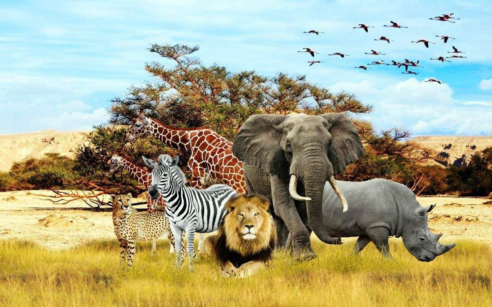

Tables!
| header 1 | header 2 | header 3 | header 4 |
|---|---|---|---|
| header 1 | header 2 | header 3 | header 4 |
| data 1 | data 2 | data 3 | data 4 |
| data 1 | data 2 | data 3 | data 4 |
| header 1 | header 2 | header 3 | header 4 |
|---|---|---|---|
| header 1 | header 2 | header 3 | header 4 |
| data 1 | data 2 | data 3 | data 4 |
| data 1 | data 2 | data 3 | data 4 |
Importance of Animals to Humans and Environment
Animals are essential to our planet’s ecosystem functions as ecological keystones, pollinators and early-warning systems of environmental health that maintain biodiversity and food chains, provide insights to scientific research in genetics and behaviour, and serve as companions and emotional support. The loss, due to the extinction crisis and the ever-expanding trade in private pets and exotic animals, of these diverse contributors, who occupy a critical place in the symphony of life, would strip away a vital strand from the rich and beautiful fabric of nature that supports life on Earth. The continuation of life as we know it depends on respecting the intrinsic values of animals in an interconnected and interdependent world.
birds
It should come as no surprise, then, that birds play an important role in the ecology of the planet. Specifically, their pest-control services are invaluable. An enormous number of birds eat insects, from swallows and sparrows in our backyards to many species with diets specific to insects. They keep local populations of insect pests under control, preventing runaway outbreaks that could devastate crops. So while we often think of birds in terms of adorable songbirds, their natural pest-control activities are a global service; with insects estimated to cause more than $70 billion in crop damage, and with pesticides having known health risks, birds perform a valuable service that helps to keep the agricultural world on track, without resorting to dangerous chemicals. Birds are also major pollinators for plants. The hummingbird pollinating the purple-bloomed coral is an obvious example, while larger birds are the primary pollinators for many fruit trees and strawberries and other fruit-bearing bush species.
In addition to the fact that birds play keystone roles in ecological processes such as pollination, pest control and predation, birds are cultural currency, inspirations for art, poetry, stories and spirituality around the world. Birds and birdwatching are economically vital, bringing revenue into local economies in every corner of the world. They’re waste disposers and seed dispersers, essential to the maintenance and flourishing of diverse ecosystems. And that’s just the tip of a remarkably diverse iceberg; the snowy owl, a magnificent ‘nightjar’, a petite ‘hummingbird’, the magnificent ‘toucan’ – these birds inhabit the far extremes and bring great keystone benefits to freezing Arctic lands and tropical, lush forests alike.Neither does it downplay the fact that some bird species actually help keep humans healthy, by hunting rodents and insects that can carry disease. The fact that birds are now generally acknowledged for their roles in such vastly different ways, from eco-maintenance and culture to disease management, simply reiterates the irreplaceable crucial nature of their roles in the sheer complexity of life on Earth. To continue learning about new bird species, and the roles to which they can put to use, should of necessity spur conservation efforts to eternally sustain the benefits that birds offer to our own planet.
Reptiles – a unparalleled remarkably diverse group of more than 10,000 species – contribute to our planet’s ecological balance and overall wellbeing in important ways. A primary contribution of reptiles to human life is pest control. Snakes help regulate rodents, thereby preventing crop damage and possibly reducing the spread of diseases to humans that these rodent pests can carry. Some lizard species also help control the numbers of pest insects that can harm crops and other vegetation. Reptiles’ natural pest-control services help ensure the sustainability of agriculture, and also reduce the need for harmful chemical pesticides.
But these things can still be important in terms of nutrient cycling and ecosystem function. For example, turtles are scavengers that help keep waterways clean by eating carrion, the dead remains of other animals, for instance. By eating dead things, turtles and other scavenging predators can help ensure that nutrients vital to the organisms in a system get reused as rapidly as possible, keeping the system’s production lines high. And they can often help stop the spread of diseases by carrying away the potentially harmful remnants of dead larger animals. Second, reptiles can serve as critical prey items in ecosystems, aiding predators and functioning as links in ecosystems that can facilitate food webs. Ecosystems are only as large and diverse as the organisms living in them. Without vertebrates and other prey species, ecosystems can lose diverse food webs and the functions associated with them. For example, many animals rely on reptiles for their daily rummages through the undergrowth, consuming insects and lower-level herbivores.
The incredible diversity of reptiles, from the cold-blooded sexiness of crocodiles in wetlands to the darting lizardry of geckos in deserts, bespeaks a territorial spread that is true to life. Many reptiles navigate a range of ecosystems, from wet to dry and from desaline to freshwater, from mountains to swamps and everything in between. From ancient elongated forms of the crocodilans to lizard-like anoles, reptiles evolved as arch terrestrial creatures and nostrils of the land. The wholescale value of reptiles for life on Earth cannot be overstated. Any protection and preservation of key reptilian groups would do a world of good not only for the intrinsic value of life but for the value of life for life.
From frogs to salamanders, there are more than 7,000 known species of amphibians in the world today that perform vital ecosystem services. Many amphibians are prolific insectivores, helping to curb populations of disease-vectored pest species. They also keep insect populations in check, reducing the need for chemical pesticides around farms. By controlling insect populations, amphibians play a key role in the provision of ecosystem services supporting agricultural producers. Additional ecosystem services that amphibians provide include acting as bioindicators, where they relay information about the sensitivity of a habitat or water quality to changes in the environment. Their importance as sentinels comes from their biological sensitivity, and this can be forewarning of larger issues related to the environment that affect other species, including humans.
Further emerging medical applications add another layer to their niche-filling roles in ecosystems. Compounds in skin secretions of frogs have antimicrobial properties that have been used as a basis for antibiotics. Immunological investigations on amphibians have revealed important insights for treatment of human disease. Amphibian breeding biology with its aquatic and terrestrial stages often alternating are important model systems for developmental biology. The connection between amphibians and health is intrinsic and this serves as an additional reason to keep populations.
The species richness of amphibians ranges from the colourful tropical poison dart frogs to the highly crypto-morphic temperate salamanders. Amphibians help support ecosystem health through their nutrient recycling, serving both as predator and as prey. Many amphibian species are under threat due to habitat loss, pollution and emerging infectious diseases. Protecting amphibians and their habitats is critical to maintaining the unique and diverse contributions to global ecosystems, and the associated health benefits for humans.